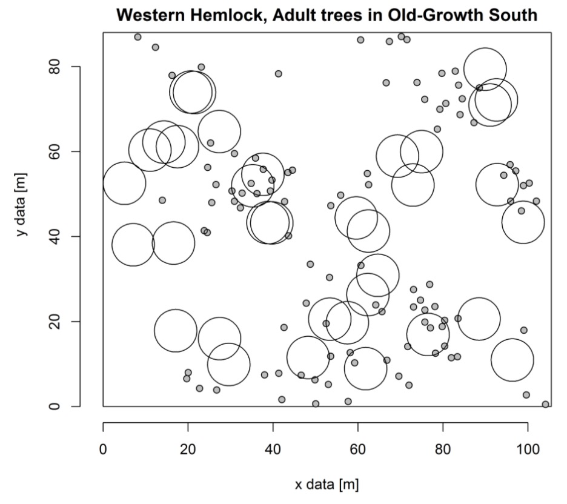

Please find the introduction slides here. If you want to print the point pattern to flip coins on it, you can find a DIN A4 .pdf-file here. Addtionally, there is an Excel template, you can find here.

In case you do not want to print the pattern and actually flip a coin, you could use the following code to “simulate” a coin flip.
# function to virtually flip coins
flip_coin <- function(pattern, n = 50, radius = 5) {
# loop through number of coin flips
vapply(X = 1:n, FUN = function(x) {
# random coord within plot as coin center
coin_center <- spatstat::runifpoint(n = 1, win = pattern$window)
# calculate coords of circle around center using radius
coin_x <- sin(seq(0, 2 * pi, length.out = 250)) * radius + coin_center$x
coin_y <- cos(seq(0, 2 * pi, length.out = 250)) * radius + coin_center$y
# convert circle to window object
coin_owin <- spatstat::owin(poly = cbind(rev(coin_x), coin_y))
# sum of points within window
sum(spatstat::inside.owin(x = pattern, w = coin_owin))
}, FUN.VALUE = numeric(1))
}You can use the resulting count of events within each virtual coin flip to fill the Excel template. Have a look at different radius arguments, to analyse various sizes of the “moving window”.
library(dplyr)
library(spatstat)
# read x and y coords of data
douglas_fir <- read.table(file = "Data/DouglasFir_Adult_vs_Seedling_OGN.txt",
sep = ';', header = TRUE)
# filter for only living trees
douglas_fir <- dplyr::filter(douglas_fir, mark == 1)
# convert to spatstat point pattern object
douglas_fir_ppp <- spatstat::ppp(x = douglas_fir$x, y = douglas_fir$y,
window = spatstat::ripras(x = douglas_fir$x,
y = douglas_fir$y,
shape = "rectangle"))
# create 35 coin flips
flip_coin(pattern = douglas_fir_ppp, n = 35)## [1] 0 0 0 1 2 0 1 0 0 0 0 0 1 4 0 0 1 0 0 0 2 5 0 1 1 2 4 0 0 1 0 2 1 1 0